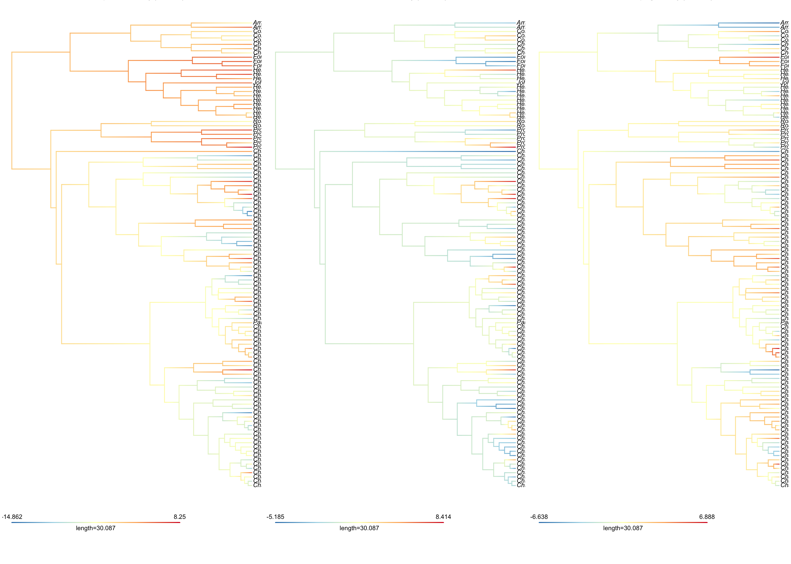

suppressPackageStartupMessages({
library(ape)
library(phytools)
})
BUNDLE <- "../../bundle"Continuous ASR — PhyloPC 1-3
Ancestral state reconstruction of the leading phylogenetic PC axes
Tip
Elective recipe. Takes the cached phyl.pca object from the bundle and maps PC 1, 2, and 3 onto the chronogram with phytools::contMap. The three PCs together capture ~72% of the variance in the pavo color-pattern metrics for Chaetodontidae, so this is a compact view of how the family’s color-pattern axes have evolved through time.
What you’re computing
- Take the bundle’s pavo metric matrix (one row per species, columns are transition density, color/luminance diversity, boundary strength, etc.).
- Compute a phylogenetic PCA with
phytools::phyl.pcausing a Brownian model on the correlation matrix. (This is what the cachedphylo_pca.rdscontains.) - For each of PC1, PC2, PC3, run
phytools::contMapto estimate ancestral values along every branch using Brownian-motion REML. - Plot the three maps side-by-side so you can see which axis has evolved most strongly on which part of the tree.
Setup
The phylo-PCA step
# === Canonical recipe call — RUN ONCE, then comment out ===
# This is fast (~10 sec for 109 species × 10 traits) so re-running is
# cheap, but we still cache it because the contMap step below depends on
# stable PC orientation.
pavo <- read.csv(file.path(BUNDLE, "pavo_metrics.csv"))
tree <- read.tree(file.path(BUNDLE, "chaetodontidae-tree.tre"))
stat_cols <- c("m", "m_r", "m_c", "A", "Sc", "St",
"Jc", "Jt", "m_dS", "m_dL")
pavo$species <- gsub(" ", "_", pavo$species)
pavo <- pavo[complete.cases(pavo[, stat_cols]), ]
shared <- intersect(pavo$species, tree$tip.label)
pavo <- pavo[match(shared, pavo$species), ]
tree <- keep.tip(tree, shared)
X <- as.matrix(pavo[, stat_cols])
rownames(X) <- pavo$species
set.seed(20260526)
ppca <- phyl.pca(tree, X, method = "BM", mode = "corr")
saveRDS(list(ppca = ppca, X = X, tree = tree, stat_cols = stat_cols),
file.path(BUNDLE, "phylo_pca.rds"))pp <- readRDS(file.path(BUNDLE, "phylo_pca.rds"))
ppca <- pp$ppca
tree <- pp$tree
S <- ppca$S # n species × n PCs scores
eig <- diag(ppca$Eval)
ve <- 100 * eig / sum(eig)
cat(sprintf("Tree tips: %d; traits: %d; PCs: %d\n",
length(tree$tip.label), length(pp$stat_cols), length(eig)))Tree tips: 109; traits: 10; PCs: 10cat("Variance explained (%): ",
paste(sprintf("PC%d=%.1f", seq_along(ve), ve), collapse = ", "),
"\n")Variance explained (%): PC1=39.5, PC2=19.2, PC3=13.5, PC4=11.5, PC5=7.8, PC6=5.2, PC7=3.0, PC8=0.3, PC9=0.1, PC10=0.0 PC loadings
loadings <- round(ppca$Evec[, 1:3], 3)
colnames(loadings) <- c(sprintf("PC1 (%.0f%%)", ve[1]),
sprintf("PC2 (%.0f%%)", ve[2]),
sprintf("PC3 (%.0f%%)", ve[3]))
knitr::kable(loadings, caption = "Trait loadings on the first three phylogenetic PCs.")| PC1 (39%) | PC2 (19%) | PC3 (14%) | |
|---|---|---|---|
| m | -0.460 | 0.198 | 0.086 |
| m_r | -0.448 | 0.098 | -0.037 |
| m_c | -0.433 | 0.288 | 0.210 |
| A | 0.031 | -0.243 | -0.487 |
| Sc | -0.363 | -0.279 | -0.394 |
| St | -0.295 | -0.301 | -0.339 |
| Jc | -0.158 | 0.441 | -0.437 |
| Jt | 0.184 | 0.547 | -0.168 |
| m_dS | 0.216 | -0.200 | -0.136 |
| m_dL | 0.274 | 0.327 | -0.450 |
Loading interpretation (signs taken at face value — flip if needed for narrative):
- PC1 is dominated by transition-density terms (
m,m_r,m_c) with negative loadings, so high PC1 = simple patterns (few color transitions) and low PC1 = busy patterns. - PC2 is dominated by
Jc,Jt,m_dL(positive) so high PC2 = high color/luminance diversity. - PC3 is dominated by
A(stripe orientation, negative) andm_dL(negative), so high PC3 = horizontal-stripe geometry.
ASR for PC1-3
PC1 <- setNames(S[, 1], rownames(S))
PC2 <- setNames(S[, 2], rownames(S))
PC3 <- setNames(S[, 3], rownames(S))
cm1 <- contMap(tree, PC1, plot = FALSE, res = 200)
cm2 <- contMap(tree, PC2, plot = FALSE, res = 200)
cm3 <- contMap(tree, PC3, plot = FALSE, res = 200)par(mfrow = c(1, 3), mar = c(2, 0.5, 2, 0.5), bg = "white")
plot_cm <- function(cm, ttl) {
cm <- setMap(cm, colors = c("#2c7bb6", "#abd9e9", "#ffffbf",
"#fdae61", "#d7191c"))
plot(cm, fsize = 0, lwd = 1.4, outline = FALSE,
legend = 0.7 * max(nodeHeights(cm$tree)),
leg.txt = "")
title(ttl, line = 0.5, cex.main = 1.1)
}
plot_cm(cm1, sprintf("PC1 — pattern density (%.0f%% var)", ve[1]))
plot_cm(cm2, sprintf("PC2 — color diversity (%.0f%% var)", ve[2]))
plot_cm(cm3, sprintf("PC3 — stripe geometry (%.0f%% var)", ve[3]))
Where on the tree has each axis evolved most?
A quick “where did the action happen” diagnostic — for each branch we record the squared change in reconstructed value per million years (Brownian rate), sum across all branches to identify hotspots.
get_branch_rates <- function(cm) {
# cm$tree$edge gives (parent, child) pairs; cm$tree$maps gives sequences
# of state colors per edge. For a numeric summary we take the absolute
# value change at each edge by mapping color back to value.
edge_len <- cm$tree$edge.length
n_edge <- nrow(cm$tree$edge)
# state at parent and child:
states_at_node <- function(node_id) {
incoming <- which(cm$tree$edge[, 2] == node_id)
if (length(incoming) == 0) {
# root
e <- which(cm$tree$edge[, 1] == node_id)[1]
return(as.numeric(names(cm$tree$maps[[e]])[1]))
}
e <- incoming
last <- cm$tree$maps[[e]]
as.numeric(names(last)[length(last)])
}
nodes <- unique(c(cm$tree$edge[, 1], cm$tree$edge[, 2]))
val <- sapply(nodes, states_at_node)
names(val) <- nodes
parent_v <- val[as.character(cm$tree$edge[, 1])]
child_v <- val[as.character(cm$tree$edge[, 2])]
abs(child_v - parent_v) / edge_len
}
br1 <- get_branch_rates(cm1)
br2 <- get_branch_rates(cm2)
br3 <- get_branch_rates(cm3)
summary_rates <- data.frame(
PC = c("PC1", "PC2", "PC3"),
total_change = round(c(sum(br1 * cm1$tree$edge.length, na.rm = TRUE),
sum(br2 * cm2$tree$edge.length, na.rm = TRUE),
sum(br3 * cm3$tree$edge.length, na.rm = TRUE)), 2),
mean_rate = round(c(mean(br1, na.rm = TRUE),
mean(br2, na.rm = TRUE),
mean(br3, na.rm = TRUE)), 4),
max_branch_rate = round(c(max(br1, na.rm = TRUE),
max(br2, na.rm = TRUE),
max(br3, na.rm = TRUE)), 4)
)
knitr::kable(summary_rates,
caption = "Per-axis Brownian summary across all branches.")| PC | total_change | mean_rate | max_branch_rate |
|---|---|---|---|
| PC1 | 15315 | 26.8115 | 290.5433 |
| PC2 | 17754 | 31.0212 | 265.4306 |
| PC3 | 15355 | 27.6132 | 205.5937 |
Takeaways
- PC1 (pattern density, ~40% var) shows the deepest reconstructed signal — the Chaetodon clade tends toward busy, high-transition patterns while several Prognathodinae lineages drift toward simpler designs. This matches the Hemingson & Bellwood (2018) result that pattern complexity is partitioned among major clades.
- PC2 (color diversity, ~19% var) has the most localized hotspots — individual species with vivid Jc/Jt scores stand out against a more conservative family-level baseline.
- PC3 (stripe geometry, ~14% var) captures the small number of species that have rotated their stripes 90° (e.g., C. striatus, C. octofasciatus) — these appear as bright tips against a calm background.
How to extend
- Swap
phyl.pcafor aphyl.RDAon a multivariate trait + environment design to test which axes are environmentally structured. - Re-run
contMapon each of the 10 raw pavo metrics individually for a per-trait view (useful if PCs are hard to interpret in your group’s context). - Pair this ASR with the node-heights test to ask whether early or late branches contributed most to PC1-3 divergence.